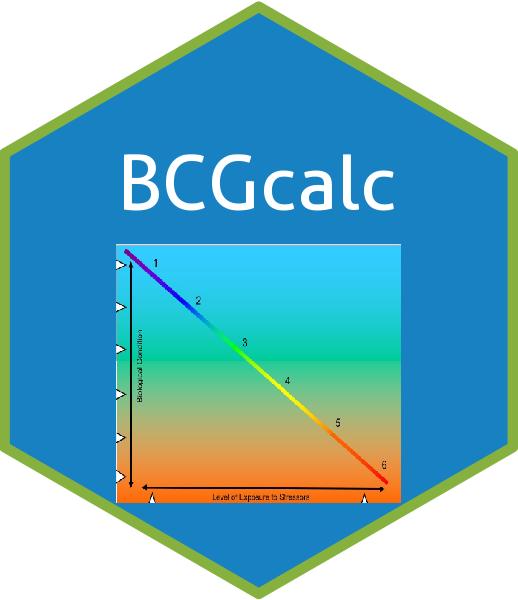

BCGcalc 
Biological Condition Gradient (BCG) calculator. Perform basic functions needed for metric calculation and model (level) assignments.


Installation
To install the current version use the code below to install from GitHub. The use of “force = TRUE” ensures the package is installed even if already present. If the package remotes is missing the code below will install it.
if(!require(remotes)){install.packages("remotes")} #install if needed
install_github("leppott/BCGcalc", force=TRUE)The vignette (big help file) isn’t created when installing from GitHub with the basic install_github command. If you want the vignette install with the code below.
if(!require(remotes)){install.packages("remotes")} #install if needed
install_github("leppott/BCGcalc", force=TRUE, build_vignettes=TRUE)All dependent libraries should install with the install_github command but occassionally they do not. If you encounter issues the dependent libraries can be installed separately with the command below.
# Choose a CRAN mirror (dowload site) first (can change number)
chooseCRANmirror(ind=21)
# libraries to be installed
data.packages = c(
"devtools" # install helper for non CRAN libraries
,"installr" # install helper
,"knitr" # create documents in other formats (e.g., PDF or Word)
,"dplyr" # summary stats
,"reshape2" # convert wide to long format
,"rmarkdown" # a dependency that is sometimes missed.
,"readxl" # for importing Excel data
)
lapply(data.packages,function(x) install.packages(x))Additionally Pandoc is required for creating the reports and (sometimes) needs to be installed separately. Pandoc is installed with RStudio so if you have RStudio you already have Pandoc on your computer. Install directions are included below.
Purpose
To aid users in data tasks related to the Biological Condition Gradient for the Pacific Northwest.
Usage
Everytime R is launched the BCGcalc package needs to be loaded.
The default working directory is based on how R was installed but is typically the user’s ‘MyDocuments’ folder. You can change it through the menu bar in R (File - Change dir) or RStudio (Session - Set Working Directory). You can also change it from the command line.
Help
Every function has a help file with a working example. There is also a vignette with descriptions and examples of all functions in the BCGcalc library.
# To get help on a function
# library(BCGcalc) # the library must be loaded before accessing help
?BCGcalcTo see all available functions in the package use the command below.
# To get index of help on all functions
# library(BCGcalc) # the library must be loaded before accessing help
help(package="BCGcalc")The vignette file is located in the “doc” directory of the library in the R install folder. Below is the path to the file on my PC. But it is much easier to use the code below to call the vignette by name. There is also be a link to the vignette at the top of the help index for the package.
“C:.3_BCGcalc.html”
vignette("vignette_BCGcalc", package="BCGcalc")If the vignette fails to show on your computer. Run the code below to reinstall the package and specify the creation of the vignette.
Example
A quick example showing the calculation of metrics on a dataset but returning only a select few (e.g., the 12 metrics used in the BCG model for the Pacific NW). This functionality is built into the metric.values function as an optional parameter.
library(BCGcalc)
library(readxl)
library(reshape2)
library(knitr)
library(BioMonTools)
df.samps.bugs <- read_excel(system.file("./extdata/Data_BCG_PacNW.xlsx"
, package="BCGcalc"))
myDF <- df.samps.bugs
# Columns to keep
myCols <- c("Area_mi2", "SurfaceArea", "Density_m2", "Density_ft2")
# Metrics to Keep
met2keep <- c("ni_total", "nt_total", "nt_BCG_att1i2", "pt_BCG_att1i23"
, "pi_BCG_att1i23", "pt_BCG_att56", "pi_BCG_att56"
, "nt_EPT_BCG_att1i23", "pi_NonInsJugaRiss_BCG_att456"
, "pt_NonIns_BCG_att456", "pi_NonIns_BCG_att456", "nt_EPT")
# Run Function
df.metric.values.bugs <- metric.values(myDF, "bugs", fun.MetricNames=met2keep
, fun.cols2keep=myCols)
# View Results
#View(df.metric.values.bugs)
kable(head(df.metric.values.bugs), caption="Selected metric results")